Surface tension
If you look closely at a dewdrop sparkling in the morning sunlight, you will find that the drop is spherical. The drop takes this shape because of a property of liq uid surfaces called surface tension.
Attractive forces between molecules are either cohesive or adhesive. Cohesive forces occur between like molecules: adhesive forces are between unlike molecules. Cohesive forces are what hold liquids and solids together and differentiate them from gasses. Within the bulk of a liquid or solid, the cohesive forces are essentially balanced, exerted in all directions, because there are other molecules of the material in all directions.
However, the balance of forces at a surface is different, because the cohesive forces can only be exerted from molecules on or below the surface (Fig. 1).
In a liquid, these unbalanced forces cause the surface to minimize its area (a drop of water is spherical), giving rise to what is called surface tension. Surface tension is direclty related to the magnitude of intermolecular forces in liquid. The greater the intermolecular force, the greater the surface tension.
Surface tension forces act like a skin on a balloon to contain the bulk beneath the surface. In both liquids and solids, this imbalance of forces results in a greater energy for the molecules at the surface. This excess energy in a solid is referred to as surface energy. Surface tension and surface energy have the same units, for example Joules per square meter.
If you place a sewing needle very carefully on the surface of a bowl of water, you will find that the needle floats even though the density of steel is about eight times that of water. This phenomenon can also be explained by surface tension. A close examination of the needle shows that it actually rests in a depression in the liquid surface as shown in Figure 2. The water surface acts like an elastic membrane under tension. The weight of the needle produces a depression, increasing the surface area of the film. Molecular forces now act at all points along the depression, tending to restore the surface to its original horizontal position. The vertical components of these forces act to balance the force of gravity on the needle. The floating needle can be sunk by adding a little detergent to the water, which reduces the surface tension.
Cohesive intermolecular forces produce a net attraction that pulls matter at the surface of a fluid into the bulk of the liquid. In order to add matter to the surface, increasing the surface area, work must be done to overcome the net attractive force exerted by the bulk liquid. Surface tension is defined as the reversible isothermal work required to create a unit surface area. The reversible work needed to increase the interfacial area by dA is then
dWrev = γ dA
The change in free energy of a surface, dG, on incrementing the area by dA is also given by γdA.
The surface tension, γ (J/m*, N/m) is the ratio of the work done to expand the surface divided by the increase in surface area. Surface tension values are used to estimate the vapor pressure of liquids in aerosols and in soil capillaries, among other things. Measured values of surface tension of organic liquids that are not hydrogen bonded lie in the range of 0.020 to 0.040 N/m at 20°C. Values of surface tension as high as 0.065 N/m are observed for hydrogen-bonding organic liquids. The surface tension of water is 0.0728 N/m at 20°C.
High surface tension liquids, like water, form three-dimensional balls or bubbles, as in the photo on the right. Low surface tension materials spread out, flowing across a surface and exhibit very little three-dimensional height.
Capillary action
Polar liquids typically exhibit capillary action, the spontaneous rising of a liquid in a narrow glass tube. Two different types of forces are responsible for this property: cohesive forces, the intermolecular forces among the molecules of the liquid, and adhesive forces, the forces between the liquid molecules and their container. Capillary comes from the Latin word capillaris, meaning "of or resembling hair." The meaning stems from the tiny, hairlike diameter of a capillary. The capillary rise is the result of adhesive and cohesive forces act ing against the gravitational pull. The liquid rises to the point where gravity balances the adhesive and cohesive forces.
The adhesion between water and glass is greater than cohesion between water molecules. The glass pulls water up the interior of the tube, and the cohesive force between water molecules creates a concave meniscus. The water will rise until the cohesive force balance the weight of the water pulled up on the side of the tube. Since smaller-diameter tubes contain less volume of water, water rises higher as the tube diameter decreases. A nonpolar liquid such as mercury shows a convex meniscus. This behavior is characteristic of a liquid in which the cohesive forces are stronger than the adhesive forces toward glass.
Why does the capillary rise increases when the diameter of the tube decreases?
Weight of the liquid in the tube is supported by adhesive force. When the diameter of the tube decreases, the weight of the liquid it can contain also decreases. The adhesive force with the tube is greater than the cohesive force of the liquid. So the liquid is able to rise. Capillary rise increases with the decrease in the diameter.
Surfactants
Surfactants are substances that when mixed with water lower its surface tension. Surfactants are relatively large molecules with both hydrophilic and hydrophobic sites. The hydrophobic sites avoid contact with water by turning on the surface towards air This lowes the surface tension of water, and it improved the wetting ability of water. Soaps have surfactant action −sopay water has a surface tension of about 25 mN/m as compared to 72.8 mN/m in ordinary water at 20°C. Some commercial surfactants reduce surface tension even more than does common soap.
Surface-active molecules in aqueous solution orientate themselves at the surface in such a way as to remove the hydrophobic group from the aqueous phase and hence achieve a minimum of free energy state. As a result, some of the water molecules at the surface are replaced by non-polar groups. The attractive forces between the groups and the water molecules, or between the groups themselves, are less than those existing between water molecules. The contracting power of the surface is thus reduced and so therefore is the surface tension.
A similar imbalance of attractive forces exists at the interface between two immiscible liquids. The lowering of the interfacial tension between oil and water phases facilitates emulsion formation, the adsorption of surfactants on insoluble particels enables these particels to be disperdes in the form of a suspension, their adsorption on solid surfaces enables these surfaces to be more readily wetted, and the incorporation of insoluble compounts within micelles of the surfactant can lead to clear solutions.
As the surfactant concentration increases, the surface tension first decreases quickly, but soon starts to decrease slowly. The decrease of the surface tension stops at a certain concentration ncmc called the critical micelle concentration. Beyond this concentration, the surface tension does not decrease further event if we add more surfactant. This is because any added surfactant is used to form micelles beyond the concentration ncmc.
Cleaning surfaces
For cleaning or rinsing to happen, there must be a phenomenon called wetting. Wetting occurs when the surface energy of the substrate (surface to become wet) is greater than the surface energy or surface tension of the liquid. In other words, the adhesive forces between the substrate and the liquid are greater than the cohesive forces holding the liquid together. In this case, the liquid can flow over and make good contact with the substrate.
Surface tensionIf the adhesive forces of the liquid are lower than the cohesive forces, the liquid does not flow but will remain as drops and bead the surface. Polar, hydrogen bonding and non-polar forces Awhile back, I discussed polar, hydrogen bonding, and non-polar forces in the context of “like dissolves like”. Understanding surface energy helps understand how wetting occurs; and how wetting relates to accessibility to soils. Polar and hydrogen bonding forces are stronger than non-polar or dispersive forces. This is why polar liquids, like water, have stronger surface tension than non-polar liquids, like hexane. Therefore, a substrate must have a higher surface energy to be wetted by water than by hexane. Clean metal surfaces act like polar substances, since, due to the conductivity of the metal, charges can flow and leave the surface with a net charge distribution like that of a polar molecule. Organic contaminants, such as a film of oil, lower the surface energy of a substrate, because the actual surface is not the metal but the top of the oil film, and oils have little or no polar forces.
The cleanliness of a metal surface is often measured by the degree of wetting by liquids. Whether by water break, contact angle or dyne pen, the measurement is based on the degree of flowing or wetting by the liquid on the substrate.
Dyne pens contain fluids with specified surface tensions. A high number dyne pen has a higher surface tension fluid than a low number pen. Because a clean surface has a higher surface energy, determining the level of cleanliness using dyne pens consists of determining the highest number pen that flows rather than beads. Pure water flows smoothly over a high surface energy substrate, creating the sheeting that characterizes a water break or producing drops with low contact angle.
In subsequent articles, we will continue this discussion of wetting of surfaces and explain how wetting relates to cleaning and coating.